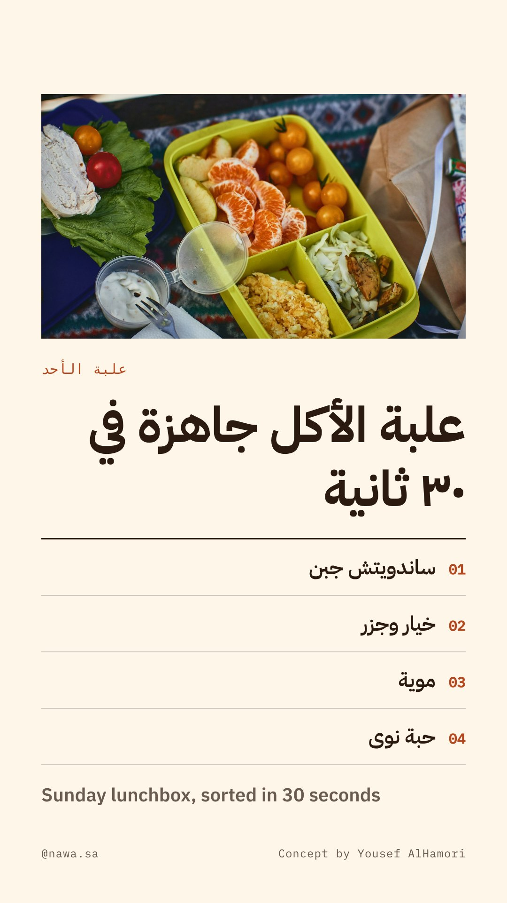
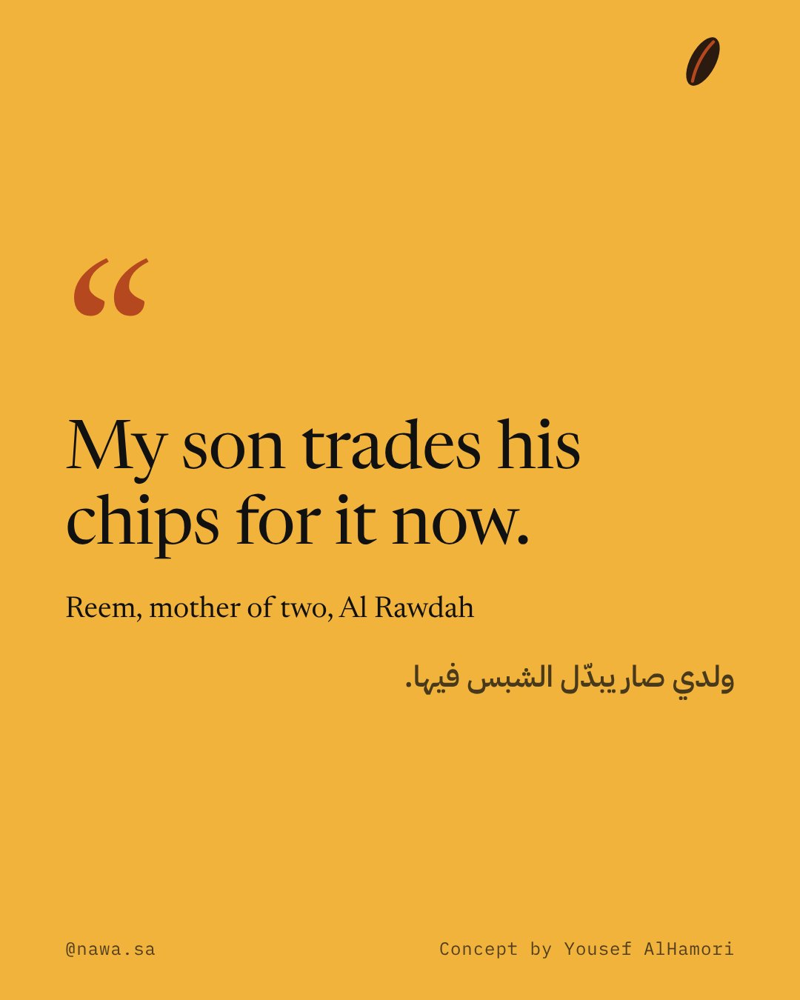
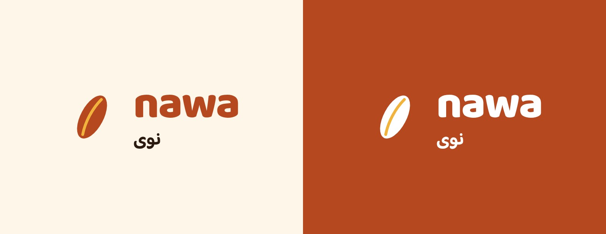

We counted. Four. Sukkari dates from Qassim, oats, cocoa and a pinch of sea salt. That is the whole bar. 🌴 #نوى #سناك_صحي #Jeddah
From the Palm pillar: builds trust with parents and drives saves.
Nawa moves off the white backdrop and into real school and gym bags across Jeddah.
Nawa makes good date bars but its feed only shows them on white. This concept puts the bar where it actually lives: the lunchbox, the gym bag, the car console. A bag reveal campaign turns parents and gym regulars into the content engine for the January back to school and new year gym rush.
Nawa is a fictional brand I invented for this exercise. Names, prices and situations are made up; the research findings are real.
Three posts from the campaign, each with the caption as it would go out and the job it does. The brand's logo sits top right. Photos are free stock images from Unsplash, standing in for a real shoot.


What the brand already does well on social, and the openings this plan goes after.

Lift saves to 3% of reach and drive 2,000 online box orders during the January back to school window.
Jeddah mothers aged 28 to 42 who pack school lunchboxes every night and screenshot lunchbox ideas from Instagram.
Parents do not want a healthy snack, they want one less argument at 6:30am.
Lift saves to 3% of reach and drive 2,000 online box orders during the January back to school window.
Real bag reveals from parents, students and gym regulars showing where Nawa sits in their day.
Quick weekday lunchbox builds and swaps in Arabic, each one under 20 seconds.
Behind the scenes from date farms in Qassim and the Jeddah kitchen, showing the four ingredients.
Store drops, new branches and box offers, kept short and clear.
| Platform | Role | Cadence |
|---|---|---|
| Main home for parents: Reels, saveable lunchbox carousels and stories with polls. | 4 Reels and daily stories per week | |
| TikTok | Bag reveal trend and gym content for the 18 to 30 crowd. | 5 per week |
| Snapchat | Store drop alerts and quick behind the scenes for local audiences who live on Snap. | Daily snaps |
| WhatsApp Business | School and office bulk orders, catalog and reorder reminders. | Weekly broadcast |
The first three weeks of January, when the second school term starts and gyms see their new year sign ups.
Everyone in Jeddah has a bag that says who they are: the lunchbox, the gym duffel, the uni tote. Nawa invites people to empty it on camera and show the one snack that made the cut.
How it spreadsFollowers post a 10 second bag dump with #وش_في_شنطتك and tag @nawa.sa. Every week Nawa picks 20 bags and refills them with a free box of six.
| Time | Visual | Audio / text |
|---|---|---|
| 0 to 3s | Top shot: a school bag unzips and its contents spill onto a kitchen table at 6:30am. | On screen text: وش في شنطتك؟ |
| 3 to 8s | Quick cut through the pile: pencil case, water bottle, sandwich box, a Nawa Sukkari Cocoa bar lands last. | Sound: zip, thud, rustle, synced to beat |
| 8 to 13s | Gym duffel in a car boot at Obhur, a Nawa Protein bar next to a shaker. | VO (Hijazi): الشنطة الثانية. بعد التمرين. |
| 13 to 18s | University tote on a library desk, Medjool Peanut bar under a notebook. | VO: الثالثة. بين محاضرتين. |
| 18 to 24s | Match cut: five different hands pull the same bar from five different bags. | Music swells, no VO |
| 24 to 30s | Bar on a clean surface beside four ingredients: dates, oats, cocoa, salt. Hashtag on screen. | VO: أربع مكونات بس. وريّنا شنطتك. On screen: #وش_في_شنطتك |
A two week calendar, the creators I would brief, and how the account answers people in the comments.
| Day | Platform | Format | Pillar | Post |
|---|---|---|---|---|
| W1 Sun | Reel | Bag Check | Campaign launch: Five Bags, One Bar | |
| W1 Mon | TikTok | Video | Bag Check | Gym duffel reveal at a Jeddah padel court |
| W1 Tue | Carousel | Lunchbox Fix | 5 lunchboxes for the first school week | |
| W1 Wed | Snapchat | Snaps | Where to Find | New Panda branches stocking Nawa |
| W1 Thu | Stories | Bag Check | Repost 20 winning bags, announce refills | |
| W2 Sun | TikTok | Video | From the Palm | How Sukkari dates become a bar in 20s |
| W2 Mon | Reel | Lunchbox Fix | Swap the chips: 3 trades kids accept | |
| W2 Tue | TikTok | Video | Bag Check | Uni tote reveal with a KAU student creator |
| W2 Wed | WhatsApp Business | Broadcast | Where to Find | Box of six reorder reminder for parents |
| W2 Thu | Reel | Bag Check | Week 2 winners montage |
| Tier | Creator type | Why them | The ask |
|---|---|---|---|
| Micro (10k to 50k) | Jeddah mothers who post school morning routines | Their followers save lunchbox ideas and trust a parent over an ad. | One bag reveal Reel and 3 stories with a swipe up to the box of six |
| Nano (2k to 10k) | Gym coaches and padel players in North Jeddah | They carry a bag every day and their audience asks what they eat after training. | Two TikToks showing the gym bag and a discount code |
| Mid (50k to 150k) | Local dietitians who post in Arabic | They give the four ingredient claim credibility with parents. | One label breakdown Reel comparing Nawa with a typical packaged snack |
Proposed targets and the tests that would tell us what to change after week one.
| Metric | Target | Why it matters |
|---|---|---|
| Saves per post | Target: 3% of reach on Lunchbox Fix posts | Saves show parents are planning to use the idea, which predicts purchase. |
| Campaign entries | Target: 600 tagged bag reveals in 3 weeks | Measures whether the format is easy enough to copy. |
| Online box orders | Target: 2,000 boxes of six in January | Ties social activity to direct revenue on nawa.sa. |
| Store locator taps | Target: 4,000 link taps to the store list | Shows social is pushing shoppers into supermarkets, not just online. |
Each major choice in this plan, matched to published research. Some studies cover the wider region or global audiences; the source says which. Full list on the research page.
65% of people in Saudi Arabia say they feel more connected to a brand through instant messaging during Ramadan and Eid.
Most people in Saudi Arabia feel more connected to a brand through messaging, so a weekly WhatsApp idea keeps Nawa in the family's routine.
Arab News, Meta study reveals Saudi, UAE Ramadan shopping insights, 202383% of global respondents completely or somewhat trust recommendations from friends and family, the most trusted form of advertising in the survey.
Mothers trust what other mothers pack more than any ad, so a bag dump spreads Nawa through recommendation.
Nielsen, Global Trust in Advertising, 2015Instagram ads reached 18.2 million users and YouTube reached 27.5 million users in Saudi Arabia in late 2025.
Instagram reaches about 18 million users in Saudi Arabia and is where these mothers screenshot lunchbox ideas.
DataReportal, Digital 2026: Saudi Arabia, 202571% of parents in Saudi Arabia are on Snapchat, according to a study by Kantar and Snap.
Most parents in Saudi Arabia are on Snapchat, so a daily snap reaches mothers at the moment they pack the bag.
Communicate Online, Saudi's Snapchat Community Hits 20 Million Milestone (Kantar and Snap study), 2022Do Jeddah mothers who receive the weekly WhatsApp lunchbox broadcast buy Nawa more often than mothers who only follow on Instagram?
6 week test comparing WhatsApp Business broadcast subscribers with an Instagram only group, using separate store finder codes
300 mothers opted in from the Lunchbox Fix posts (150 per group)
Broadcast subscribers redeem store codes at least 30% more often, with a broadcast open rate above 60%